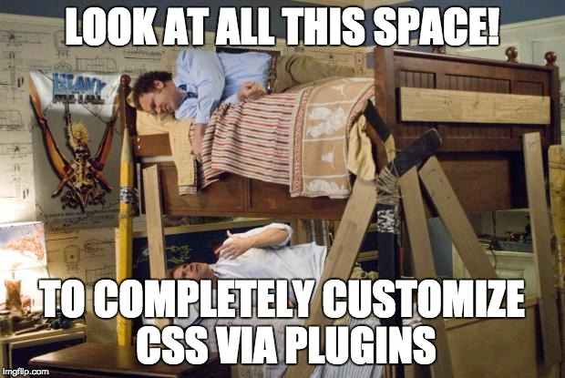
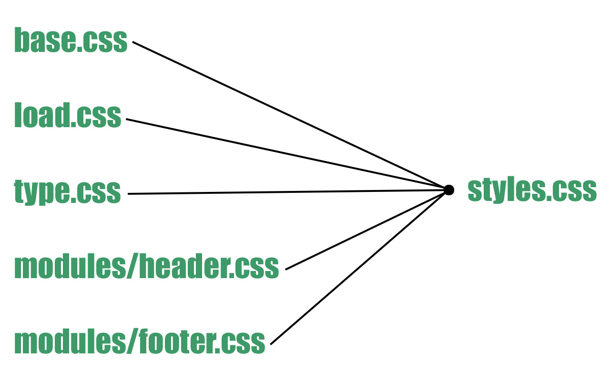

Building your own development process with PostCSS
Cory Tanner
UX Developer at DockYard
About Me
- At DockYard for over a year
- Use PostCSS in all of our projects
- Made a PostCSS pack
Before we dive in
Development Process:
A combination of tools and guidelines that provide direction for achieving a higher standard of work.
But What Makes A Development Process Important?
Big Picture
- Development tools and guidelines for CSS provide an environment to develop maintainable CSS
- Teams work in harmony when using the same tools and techniques
Sections
Using PostCSS in a Development Process
Implementing guidelines & standards
Defining PostCSS
PostCSS:
A CSS processor that can extend or report on CSS at a number of different points in your workflow
PostCSS
- A responsive community
- Can do the same thing as Sass/SCSS/Less 
PostCSS is a CSS Processor
PostCSS is a CSS Processor
- Extend or report on CSS at a number of different points in your workflow
PostCSS = Sandwich
It's Here For The Long Haul
Plugins
What They Do
- Modify CSS based on rules from the plugin
- Don't expect one plugin to solve every problem
Create Plugins
Create Plugins
- Written in JavaScript as a node module
- Look at tuts+ deep dive article PostCSS Deep Dive: Create Your Own Plugin
New Plugins
New Plugins
- Follow @PostCSS on twitter
- Explore PostCSS.parts for anything that can help a development process
PostCSS Packs
PostCSS Packs
- Collection of plugins that are prepackaged
- cssnext allows you to use tomorrow's CSS syntax now
- narwin-pack is a package with hand picked plugins that meet the needs of DockYard's UX development process
narwin-pack Plugins
narwin-pack Plugins
- postcss-partial-import
- postcss-custom-properties
- postcss-nested
- autoprefixer
- postcss-calc
- postcss-svg-fragments
postcss-partial-import
postcss-partial-import (Guidelines)
- Set up modular CSS files and import them into one CSS file
- Only have one HTTP request for multiple CSS files
postcss-partial-import (In Use)
Modular CSS file structure:
postcss-partial-import (In Use)
postcss-custom-properties
postcss-custom-properties (Guidelines)
- Variables in CSS!
- Naming conventions help organize variables
- Use
:root {}to make variables global
postcss-custom-properties (In Use)
Organized variables:
postcss-custom-properties (In Use)
Input:
Output:
autoprefixer
autoprefixer
- Based on the caniuse prefix database this plugin adds the needed prefix(es) of a style
- Configure browser support
- Simplifying development CSS
autoprefixer
Input:
Output:
postcss-nested
postcss-nested (Guidelines)
- Unwraps nested styles how Sass would
- We use this for pseudo elements/classes and media queries
postcss-nested (In Use)
Unsearchable CSS:
Searchable CSS:
postcss-nested (In Use)
Good CSS Nesting:
postcss-calc
postcss-calc (Guidelines)
- Reduces
calc()references when possible - Variables in calculations
postcss-calc (In Use)
Input:
Output:
postcss-svg-fragments
postcss-svg-fragments (Guidelines)
- Use SVG fragments in CSS
- Keep SVG files organized in one SVG file
- Can apply fills and strokes to a SVG background-image
postcss-svg-fragments (In Use)
Input:
Output:
Sections
Using PostCSS in a Development Process
Implementing guidelines & standards
Guidelines
Set Guidelines
- Make guidelines easy to access and change
GitHub
Google Docs

Guideline Examples
Guideline (In Use)
Order of declarations example:
Try to construct systems that allow people of all abilities to spend more time designing / building and less time debugging/fighting/crying. - Adam Morse @mrmrs_
Production Code
Production Code
- How does this affect production CSS?
- How are our end users affected?
The little things add up to make a big difference in the quality of your CSS and the performance of your website.
Code Review
Setup a Review Process
- Review everything
- There are few downsides to code review
Setup a Review Process
- Keeps code clean
- Developers learn from each other
Sections
Using PostCSS in a Development Process
Implementing guidelines & standards
Takeaways
Takeaways
- Development tools alongside CSS guidelines can provide needed structure to develop great CSS
- Teams that develop CSS work in harmony when using the same tools and techniques
Useful Links
Slides
DockYard Is Hiring!
Come talk to me (I have stickers) or visit our website.
dockyard.com/contact/join-usThanks!
- @Ctannerweb
- Website
- dockyard.com
- GitHub
- Ctannerweb
- Slides
- ctannerweb.github.io/talks/process-dev